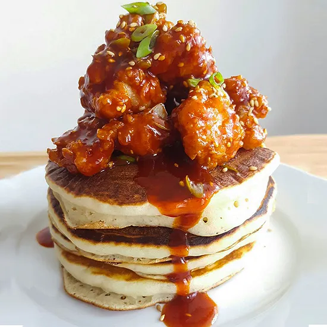

Chicken pancakes
by Beyonce
Ingridients
- Chickens
- Eggs
- Flour
- Salt
- Maple Syrup
- Lemonade
Cooking Time: 3 hours
About: This Korean Crispy Chicken Pancake is the most recent viral food trend, all thanks
to the legendary trot singer, Lee Chan Won, who dropped the recipe and basically broke the internet.
Of course, I had to see what all the craze was about, but you know I always come through with
the easy version so you can make it, too! Honestly, this is the simple hack for that perfect
fried chicken texture. It's unbelievably crispy and savory, with aromatics that take it to the
next level. Using a little potato starch is the secret weapon here!
Forget complicated recipes! This Padakjeon is guaranteed to be your new go-to. It's a killer
high-protein snack and, even better, the ultimate alcohol munchie for your next hangout! Let's go!
link"
Rating: 5/5
How it looks:
